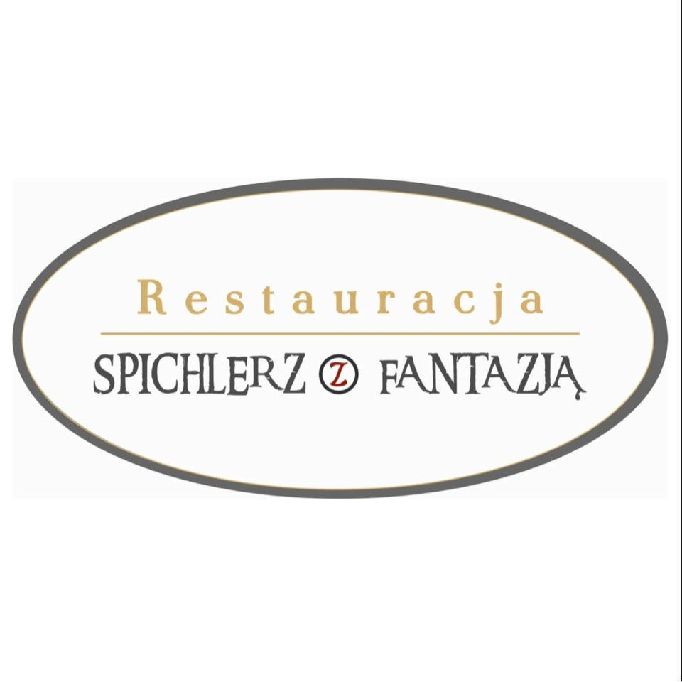

⬅️ Powrót do kategorii
🏠 Strona główna
🍷
Wino
Moet & Chandon
700ml
400zł
Prosecco Mionetto, Mionetto 0%, Mionetto Rose
700ml
100zł
Martini Asti
700ml
100zł
Martini Bianco, Rosso, Rosato, Fiero
80ml
10zł
Wino kieliszek czerwone, białe
120ml
15zł
🍷
Wina Domu
Borgobruno Bianco, Rosso
120ml / 750ml
15zł / 69zł
🍷
Wina Musujące
Castellblanc Cava Demi sec
750ml
99zł
Riondo Proseco
750ml
95zł
ARB Moscato d'Asti
750ml
89zł
🍷
Wina Białe
Sasteria Blanca
120ml / 750ml
17zł / 72zł
Montes Chardonnay
750ml
110zł
Adorno Malvasia del Salento
750ml
89zł
Pinot Grigio Zenato
750ml
120zł
The Crossings Sauvignon Blanc
750ml
130zł
🍷
Wina Czerwone
Chateau Lamothe
120ml / 750ml
17zł / 89zł
Primitivo Papale
750ml
130zł
Montes Merlot
750ml
110zł
Sasteria Garnacha
120ml / 750ml
17zł / 75zł
Sasteria Crianza
120ml / 750ml
17zł / 75zł
